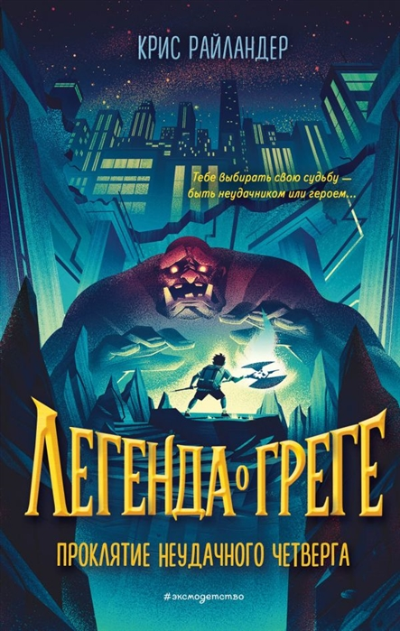
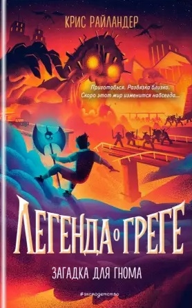

Книга 1
Проклятие неудачного четверга
Грег Бельмонт ничем не отличается от других детей. Разве что у него мало друзей, имеется чудаковатый отец, да ещё есть семейное проклятие неудачных четвергов. Точнее, так было до одного ужасного дня… Кто бы мог подумать, что он на самом деле Грегдруль Пузельбум – предок древнего рода великих воинов… гномов? Грег бы ни за что не поверил в это, если бы его отца только что у него на глазах не атаковал тролль! И теперь нужно срочно разбираться, что к чему: оказывается, в подземельях под Чикаго живут гномы и они испокон веков враждуют с эльфами (просто "Властелин колец" какой-то!), в мире возрождается волшебство и грядёт новая магическая эра, Грег умеет выращивать рукколу из кафельного пола, и с ним говорит древний боевой топор… Но всё это не так важно. Самое главное для Грега – спасти отца. Ну и ещё заодно хорошо было бы предотвратить войну и не потерять лучшего друга.
Книга 2

Дар скального тролля
Приключения (и злоключения) Грега не только продолжаются, но и набирают обороты. В мир полностью вернулась магия, поэтому на каждом шагу вас поджидают монстры, зачарованное оружие и легендарный артефакта, а ещё наверняка встретится страж какой-нибудь пещеры, который будет загадывать вам дурацкие загадки (да, а вы думали, "Властелин колец" – это просто сказочка такая?). И именно это предстоит пройти Грегу, чтобы найти Фаранлегтский амулет Сахары – камень, который может уничтожить всю магию или же подчинить её кому-то одному. Однако кроме того, что путь к амулету полон преград (вроде болтливых деревьев, кровожадных троллей и плюющихся песком каменных черепах), Грег должен найти его раньше своего бывшего лучшего друга Эдвина и до того, как армия эльфов разрушит до основания его родной город. И даже это не самая большая проблема. Сложность в том, что все, кого встречает Грег, как один твердят – амулета не существует. Что, если это действительно так? Тогда миру, возможно, и правда конец…
Книга 3
Загадка для гнома
Новая магическая эра началась! (Ну, почти.) По миру бродят тролли, гоблины, виверны и тысячи других фантастических тварей. Однако люди пока ещё не знают, что на землю возвращается магия. А Грег знает. Ведь Грег – гном. И гномы, наряду с эльфами, могут этой магией пользоваться. Это бывает довольно полезным, к примеру, когда за тобой гонится разъярённая гарпия. Правда, гномам редко везёт (особенно по четвергам). Вот и Грег, пытаясь отбиться от гарпии… поджёг собственные штаны! И это не самая главная его проблема. Ещё его лучший друг стал его врагом и мировым предводителем эльфов, грядёт конец современного мира и, возможно, кровопролитная война, а отец Грега, похоже, выжил из ума от эльфийского яда… Но Грег – не обычный гром. Он не собирается сетовать на судьбу и покорно ждать конца. Он всё исправит. По крайней мере, попробует…